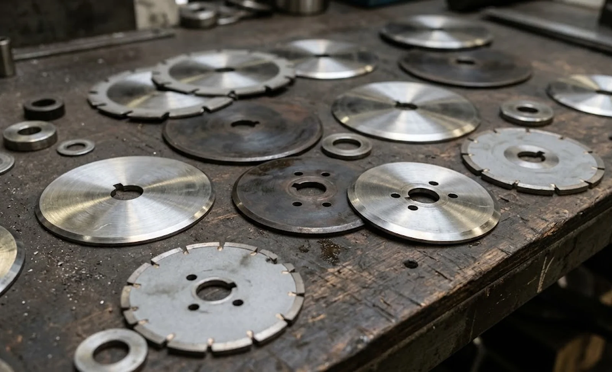
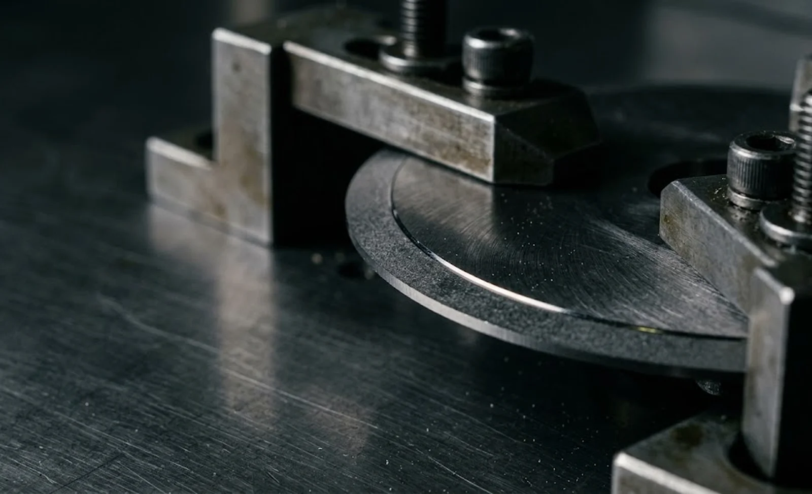

Published October 11, 2026 | By HDPTH Technical Editorial Team

Most slitter rewinder offers arrive with a standard blade material buried in the accessories list, and most buyers never revisit it. That is an expensive habit. The edge profiles compared in our blade geometry guide only work while the material keeps its edge, and the rate at which an edge disappears varies by an order of magnitude between a clean polyethylene film and a silica-coated abrasive labelstock. Choosing the wrong material shows up as constant blade changes, drifting edge quality between changes and a consumables budget that quietly doubles, the dynamics in our knife life cost guide. This guide compares the material families a buyer will be offered and shows how to select one with numbers.
Tool steel: the economical default
High-carbon high-chromium tool steels such as D2 remain the standard top- and bottom-blade material on general converting machines. They are tough, tolerate repeated workshop sharpening, resist chipping and cost a fraction of the alternatives. For clean films, papers and nonwovens on short-run and mixed production, they are usually correct. Their limit is wear and heat: on abrasive webs the edge rounds quickly, and at high speed friction softens the edge zone, so blade change intervals shorten until changeovers dominate the shift. If blades are re-sharpened every few shifts, the material — not the schedule — is the first thing to question.
High-speed and powder metallurgy steels: the speed upgrade
High-speed steels keep their hardness at elevated edge temperature, which is exactly what a fast line asks for; powder metallurgy grades add a finer, more homogeneous carbide structure, so the edge wears slower and more predictably. Both cost more than D2 and re-sharpen on the same equipment with minor parameter changes. Where steel blades currently live only one shift, a powder metallurgy blade often doubles the interval for roughly double the price — a direct win with no change to handling. The trade-off is toughness marginally below D2, which matters on machines with frequent blade crashes or rough handling.

Tungsten carbide: the abrasive-web answer
Tungsten carbide resists abrasive wear several times better than any steel, which makes it the default for glass-fibre nonwovens, mineral-filled films, abrasive labelstocks and any web with silica or calcium carbonate at the surface. On stable high-volume products carbide blades run for weeks between attentions, and the changeover savings often outweigh the higher unit price by a wide margin. Carbide’s weakness is brittleness — an impact chips the edge, and a chipped carbide blade is usually scrap. It therefore demands the careful mounting and handling discipline of our holder mounting guide, and it changes the sharpening economics, since carbide needs diamond grinding and supports fewer economic re-edgings, as our knife sharpening guide explains.
Ceramic and coated blades: special purposes
Ceramic blades offer extreme wear resistance but break under the shocks of industrial slitting; their realistic role is narrow — light-duty, very abrasive work at moderate speed. Coated steel blades — PVD coatings on a tough steel substrate — occupy the middle ground: the coating delays early edge wear on sticky or mildly abrasive webs while keeping the toughness and re-sharpenability of steel, and they are worth trialling where blades gum up with adhesive or hot-melt residues. Neither family replaces the three main materials; both are answers to specific webs, which is precisely why the material should be chosen per product family and recorded with the recipes in our recipe management guide.
Deciding by cost per length cut
The selection method is the same regardless of material. For each candidate, obtain or measure the meters slit between blade changes on your web at your speed, then compute cost per length cut: blade price amortised over its usable re-edgings, plus changeover labour and downtime, plus the cost of defects attributable to blades near the end of life. Run the comparison during a structured material trial, inspecting edges with the criteria of our edge quality guide at the start, middle and end of each blade’s life. Then specify the winning material in the machine contract and stock it per the planning in our spare parts planning guide. The material costs less than a day of trials; the wrong one costs money every shift for the life of the machine.
Not sure which blade material fits your web?
Send HDPTH your material list, speeds and current blade change intervals. We will recommend the blade material per product family, quote the consumable economics over a year, and verify the choice in a cutting trial on your material before the machine ships.
Submit Your Project InquiryFrequently asked questions
Which blade material should a slitter rewinder buyer choose?
It depends on abrasiveness, speed and duty cycle more than on budget. Conventional tool steel such as D2 is the economical default for films and papers on short-run work. High-speed and powder metallurgy steels hold an edge longer at higher speeds and on abrasive fillers. Tungsten carbide is the choice for glass fibre, mineral-filled and silica-coated webs and for long production campaigns. Ceramic suits a narrow band of very abrasive, light-duty applications but is fragile and should be treated as special-purpose.
Why is carbide not always the right answer on abrasive webs?
Carbide resists abrasive wear several times better than steel, but it is less tough: an impact, a web splice passing at high tension or a misaligned holder can chip the edge, and chipped carbide cannot be re-sharpened economically in the same way steel can. On machines with frequent crashes or where blades are handled roughly, the breakage losses can exceed the wear savings. The right comparison is total cutting cost over a year, not wear life alone.
How does blade material interact with slitting speed?
At high speed the edge works hotter and the wear mechanism shifts from pure abrasion to a combination of abrasion and thermal softening. Conventional tool steels lose hardness near the edge as temperature rises, which is why high-speed steels — designed to hold hardness at elevated temperature — outperform them on fast lines. The geometry still must match, as set out in the blade geometry guide, but material decides how long the geometry survives at speed.
What should buyers compare instead of the per-blade price?
Compare cost per length cut: blade price divided by meters slit between changes, plus the labour and downtime of each change, plus the cost of quality defects caused by running blades past their limit. On a highly abrasive web, a carbide blade that costs five times as much but lasts ten times as long and halves changeovers is the cheaper choice; on a clean film, the steel blade wins. Ask suppliers for meters-per-sharpening data on your material class.
Do blade materials need different sharpening and handling?
Yes, and this is part of the owning cost. Steel blades tolerate workshop sharpening with conventional grinding and can be re-edged many times. Carbide needs diamond abrasives and more careful heat control, and fewer re-edgings are economic. Ceramic is usually replaced rather than sharpened. Buyers should confirm that their sharpening routine, blade holders and spare stock policy are compatible with the material they choose, as covered in the knife sharpening guide.